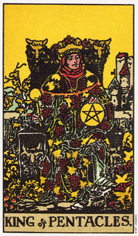

【关键词】 事业有成 经济基础 大老板 企业大亨
星币国王是一个成功的统治者。他布满自信地坐在自己的宝座上，一切都在他把握之中，他很放心。绿色的藤蔓铺他的四周还有身上，结满了象征智慧果实，代表在他的统治下，人们过着幸福而富裕的生活。他头上戴的，既有象征胜利的月桂树叶子花环，又有象征权力的金色王冠，上面镶�着红色花朵代表智慧和潜能。
星币国王表示务实而坚定的态度可以带来成功。
星币国王代表土元素中土的成分。它根基稳固，为人务实、活跃、固执、防卫性强，又勤奋工作。当这个人在工作时，恐怕你很难想象他会有休息的时刻，然而当他在休息的时候，你同样很难想象他会跑去工作。
这个国王代表成功的生意人或专业人士。他骄傲地坐在王位当中，一手握着象征王权的宝球，另一手则拿着星币。对于人生他还不够满意，因为他必须能够感觉到、触摸到成功。
他的四周满载着葡萄，按是他努力经营得到的果实是相当丰盛的，但他仍要求自然要保持平衡。
这张牌当它出现在教皇或星币四的旁边时，，可以代表占星学上的金牛座(请注意，王座上面有两个公牛头，底座的地方也刻了两只);当它出现在恋人旁边时，则代表双子座。
星币国王代表的是一个脚踏实地而又成熟的人。他的个性稳健、可靠且保守，并能戮力履行其承诺，谨慎的负起他应负的责任。他不像权杖国王般富冒险精神，或像圣杯国王那么有创意，但他可凭藉着慢慢而稳定的步伐，以及认真的实践来达到成功。
他可以做个很好的生意管理者，因为很识时务，而且他所要求别人做的是通常自己也做得到。基于他“一手掌握”的方法，他得到了结果。
星币国王是成功的，而且他喜欢成功。他没有必要像其他的国王到处横冲直撞，才能理解人生或找到内在感情的平静，因为他知道自己是活在一个物质世界当中，而物质上的舒适便可以让人生旅途迥然不同了。
大体上的意义
星币国王暗示透过身体力行而达到成功。它也可以说是务实的努力带来物质上的成功。有时候它也可能暗示，眼前有一位黑头发而务实的人，会提供你务实上的帮助。在健康的分析上，他可能指的是颈部和肩膀的紧张。
如果是指人的话，这个人喜欢美食、音乐及动物，还有大自然和物质性的事物。他凡事循规蹈矩，行事有迹可循，所以他的小心变得过分保守。
他善于处理金钱和物质性的事物，当脾气失控时，食物通常足以抚慰他，不过他通常是很有耐心的。
正位含义：
1.有身份有地位的成功人士。
2.有营销手挽的贸易人才。
3.学识丰富的人。
4.适于投资。
5.值得信赖的人，或彼此互相信赖
6.预示着能够达成理想，或代表一个能够达成理想的人。
逆位含义：
1.缺乏经济头脑的人或做法。
2.行为卑鄙。
3.两个人关系危险，也许会导致不良后果。
4.对别人不信赖的态度。
两性关系上的意义
在两性关系的分析当中，星币国王暗示着置身舒适的物质环境当中的一种耽于肉欲而世俗的关系。它也可能是指一个金牛座的男人或女人。
当这个国王想要让你知道，你对他很重要时，他会给你一些物质的东西，可能会赏你一份工作、一份礼物，或借给你一部车、一栋房子、或一层公寓让你长期使用。它是将幸福和舒适的生活方式，以及所拥有的财物画上等号。如果你抱怨说你并不快乐，他或许会觉得困惑。
“到底怎么回事?你有一件好房子、一部新车和名贵的衣服，每年有两次旅行，当我们在纽约、巴黎度假时，你就在那里大肆采购。请问你还有什么不满足的呢?”
虽然有时候比较拘谨保守，不过仍不失为稳健而可靠的伴侣。
倒立的星币国王
当星币的国王倒立时，他似乎不像原先那么善于金钱和物质性的事物。它通经常会不假思索的进行冒险。它非常想要有钱，却不严以扎实的工作来赚钱。他可以代表一个失败的生意人，或是一个才能平庸者。
在某些案例中，国王牌倒立暗示一个不诚实的生意人，一个会公然行贿的人，或会利用任何手段来达到目的的人。他已经脱离了大自然，而结果他可能过度强调物质世界。他渴望财物及安逸，而且发现自己很难将任何有价值的精神目标列为首要考量，这种目标对他而言是毫无用途的，因为它们看不见也摸不着。
国王倒立所表示的态度就是“如果我看不见它，或是摸不着它，那么我就不相信它。”
倒立的国王认为东西的价值比人还要高，他可能会深陷于世俗的物质世界中无法自拔。
整体而言，国王牌倒立暗示者在某种特殊状况的成功将会是短暂的，因为它少了缜密周延的计划。